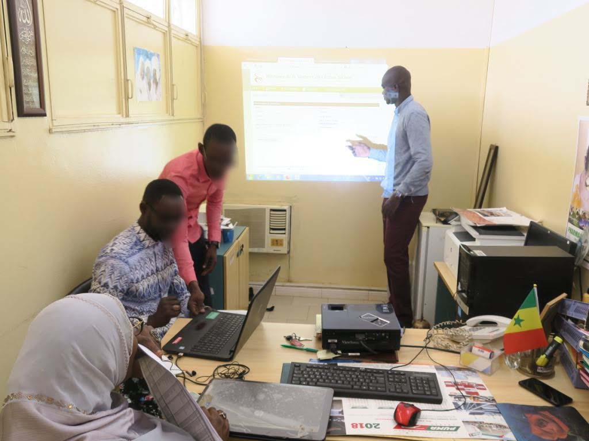
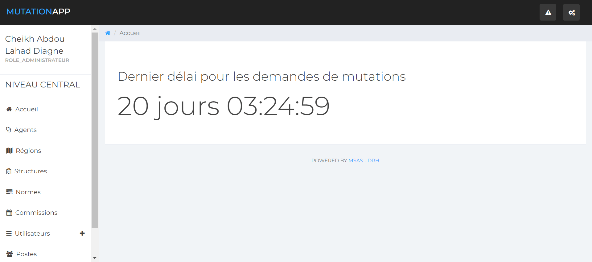
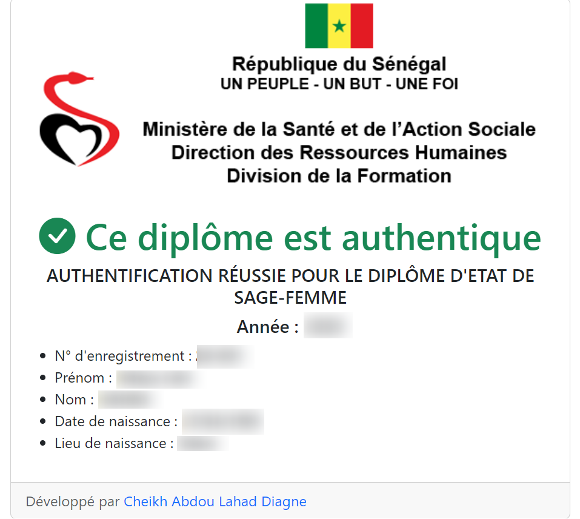
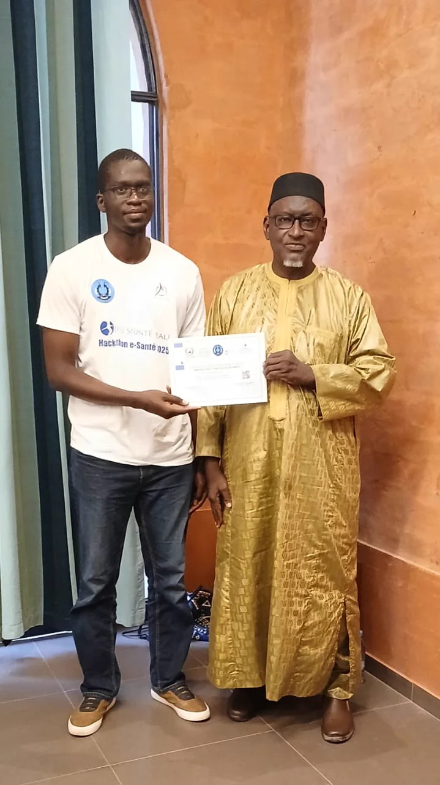
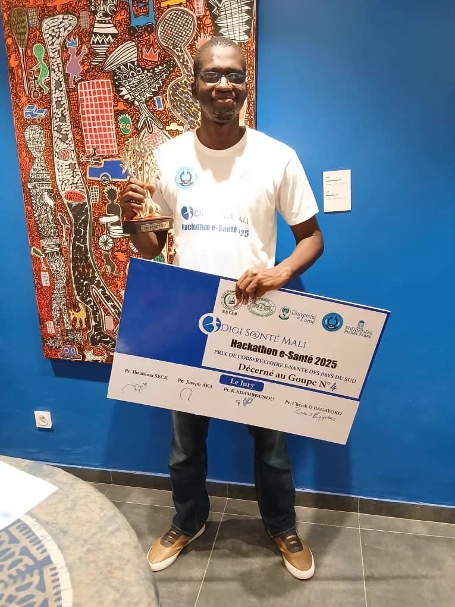
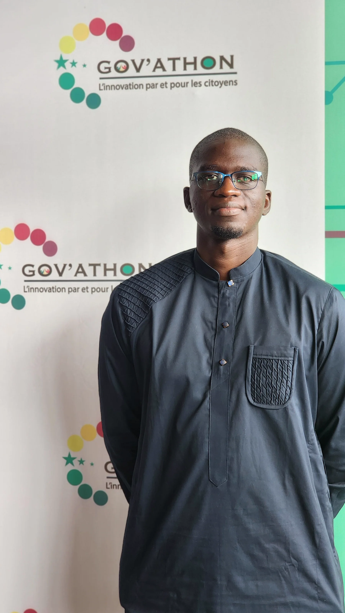
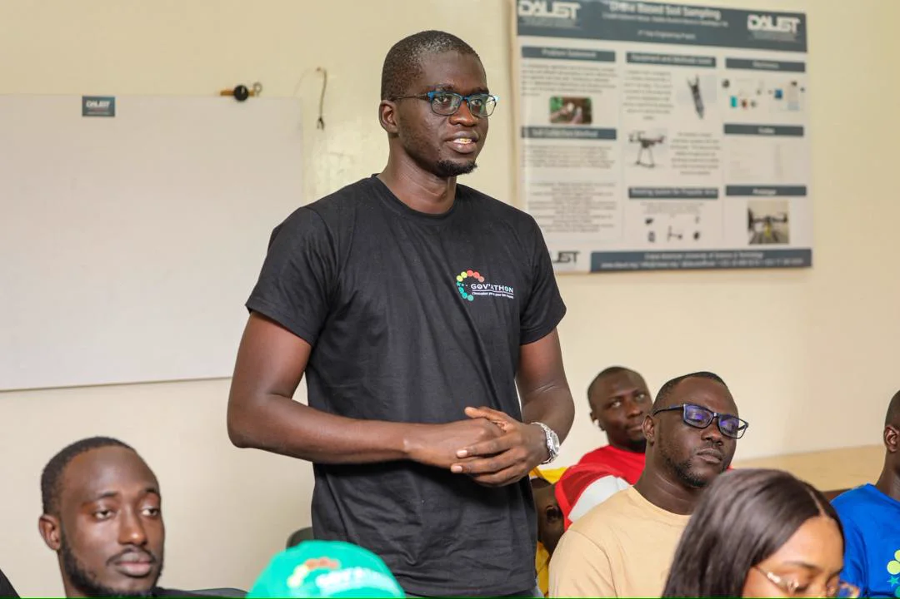

Sénégal
Cheikh Abdou
Lahad Diagne
Spécialiste en santé numérique & systèmes d’information sanitaire
Je transforme des besoins publics complexes en plateformes fiables, interopérables et réellement adoptées sur le terrain.
Impact
La technique au service de systèmes qui comptent.
Expertise
Relier stratégie publique, données de santé et ingénierie.
De l’expression du besoin à la mise en production, avec la conduite du changement qui rend les outils durables.
Systèmes d’information sanitaire
Administration iHRIS, DHIS2 Tracker & Mobile, qualité des données et outils d’aide à la décision.
Interopérabilité & gouvernance
HL7 FHIR, X-Road, PINS, GovStack et architecture d’entreprise gouvernementale.
Ingénierie logicielle
Java/Spring Boot, PHP/Laravel, API REST, PostgreSQL, Docker, Jenkins, Nginx et Linux.
Pilotage & adoption
Recueil des besoins, cahiers des charges, méthodes agiles, formation et coordination multi-acteurs.
iHRISDHIS2HL7 FHIRX-RoadJava / SpringDocker
Études de cas
Des réalisations nationales, du terrain à la plateforme.

MSHP · Depuis 2017
iHRIS : administrer, déployer et faire évoluer le SIRH santé national
25 000+ agents · 14 régions · migration v5 ↗
MSHP · Santé & RH
MIRSAS et dématérialisation des procédures
Conception, développement et déploiement ↗
Direction des Laboratoires · 2023
Authentification nationale des tests COVID
Chef de projet · Java/Spring Boot ↗Projets récents
Interopérabilité et gouvernance numérique.
Déployée
PINS / X-Road
Participation à la mise en place de la Plateforme d’Interopérabilité Nationale du Sénégal avec les acteurs institutionnels.
En cours
Échange de données de santé
Développement d’une plateforme d’interopérabilité entre DHIS2, iHRIS et ERP X3, fondée sur HL7/FHIR.
Mission réalisée
Plateforme GouvNum
Expert national mobilisé via GOPA pour la GIZ : cahier des charges de la plateforme nationale de gouvernance numérique.
Deux plateformes livrées
Données de genre & SNEEG
Pilotage de bout en bout de solutions distinctes et interopérables pour la coordination et le suivi-évaluation.
Parcours
Une double culture : logiciel et programmes de santé.
MSHP — Direction des Ressources Humaines
Chef de projet technique, ingénieur développeur et administrateur de systèmes nationaux de RH en santé.
GIZ / GOPA — Expert national
Cahier des charges de la Plateforme GouvNum dans le cadre du projet Goin’ Digital financé par l’Union européenne.
DEEG — Consultant full-stack
Deux plateformes interopérables dédiées aux données de genre et au suivi-évaluation de la SNEEG.
Idyal, Prestatech & Kheweul
Premières expériences en Java, intégration bancaire, cartographie et hébergement web.
Formation & certifications
- 2026 Introduction to DHIS2 — HISP Centre, Université d’Oslo
- 2025 HL7 FHIR Fundamentals — HL7 International
- 2025 DIU en e-Santé — consortium Digi S@nté
- 2023 MBA en Gestion des Programmes de Santé — CESAG
- 2016 Master en Génie Logiciel — ISI

Reconnaissance
Partager, évaluer, accompagner.

2025Vainqueur du Hackathon DIU E-Santé
Et prix de l’Observatoire de la E-Santé des pays du Sud.

2025Jury du Gov’athon
Membre du jury de présélection de projets d’innovation publique.

8 équipesMentorat
Une équipe accompagnée a remporté le 2e prix national SENDON.
Contact
Construisons des systèmes publics qui durent.
Disponible pour des missions en santé numérique, systèmes d’information et transformation numérique du secteur public.